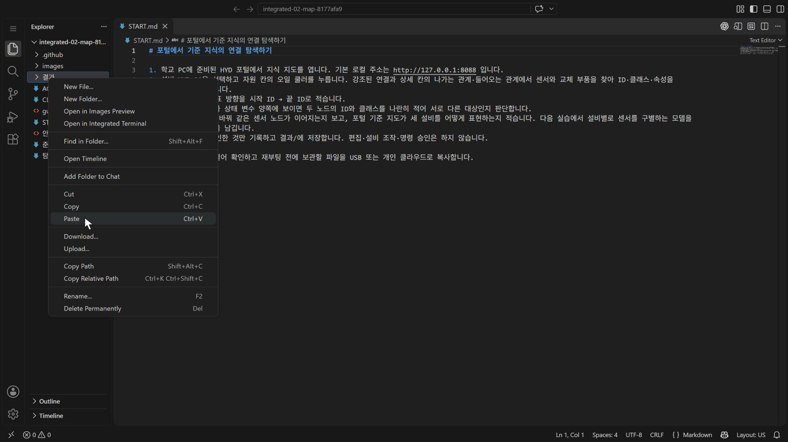
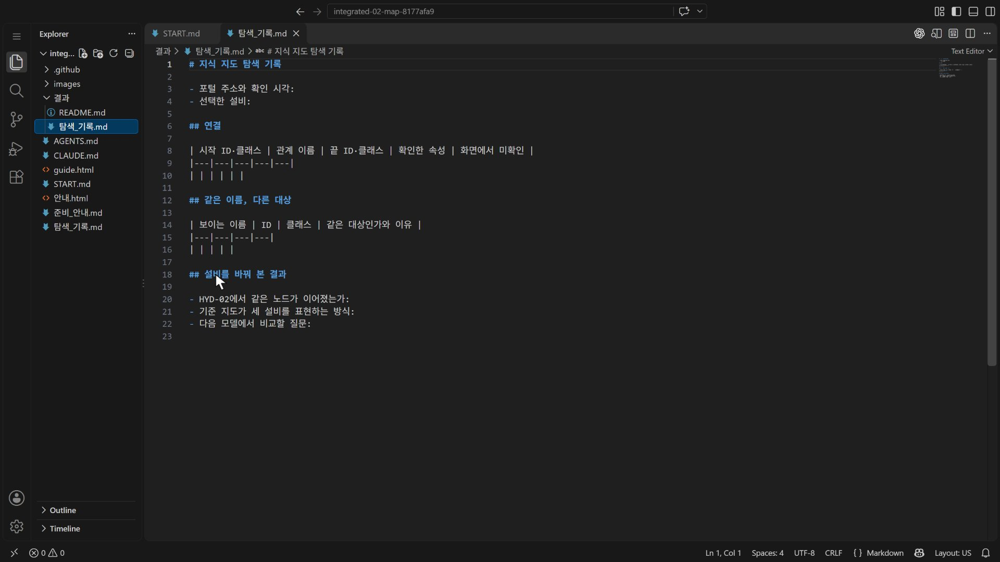
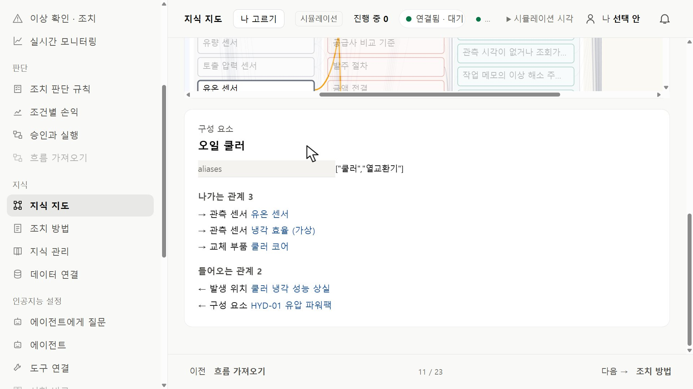
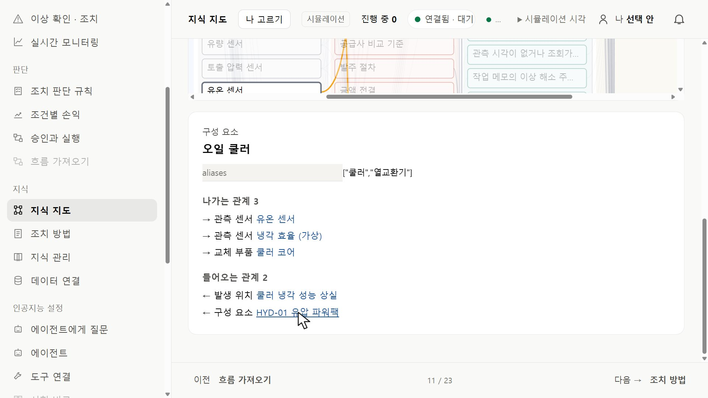
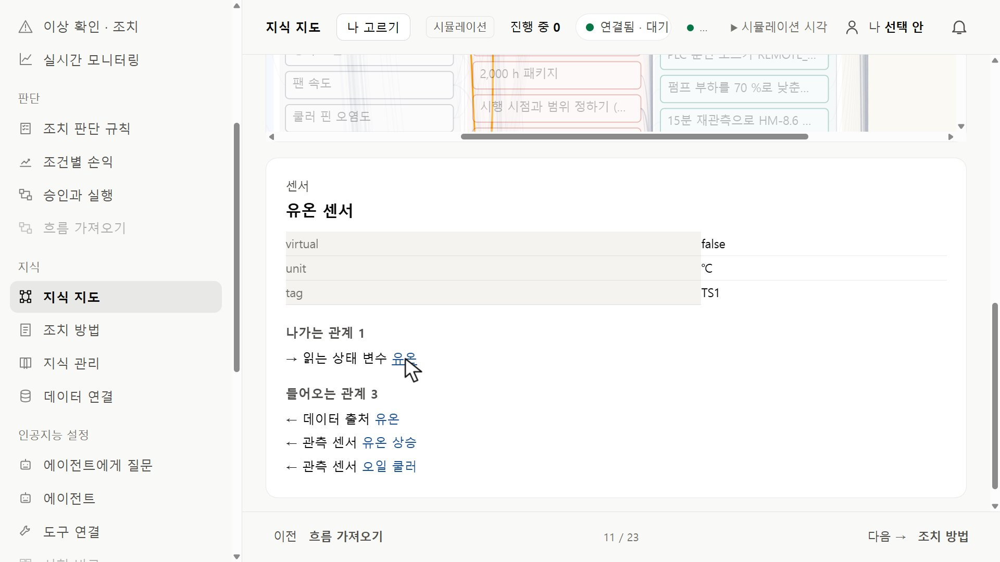
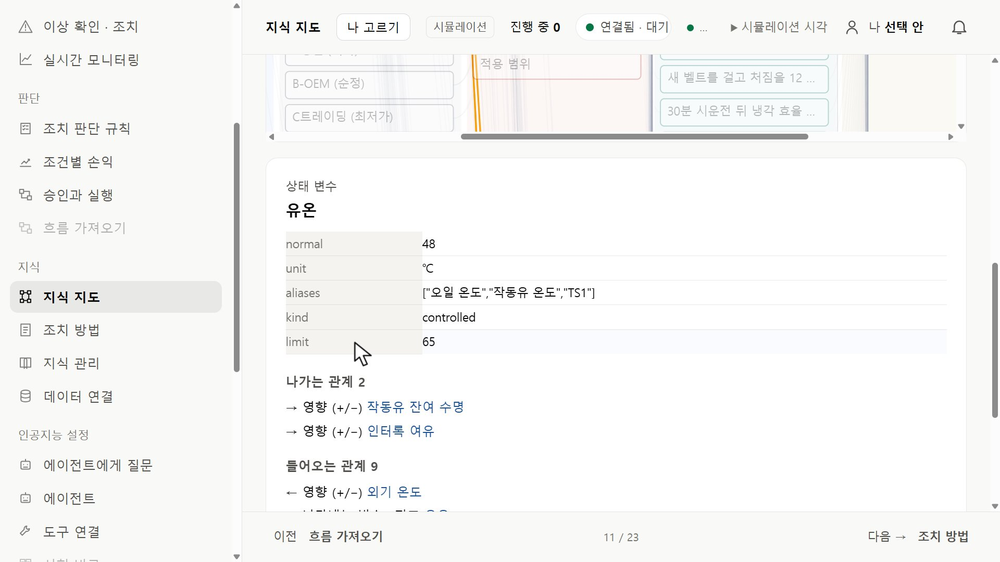
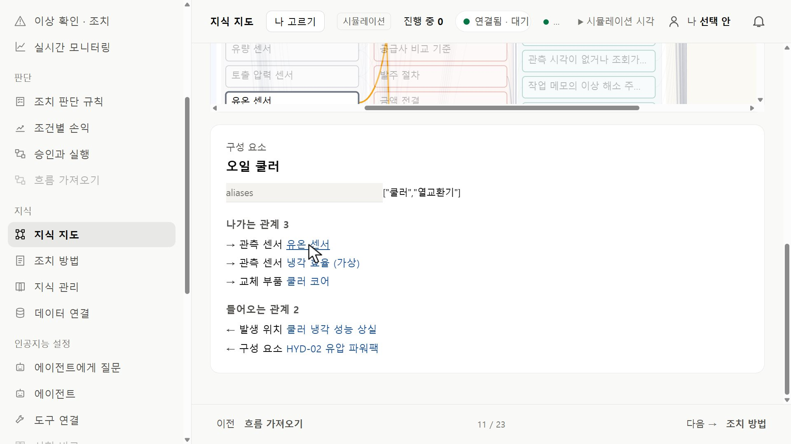

HYD · 실습 가이드포털에서 기준 지식의 연결 탐색하기
연결된 대상을 확인하고, 결과의 근거를 원자료와 대조합니다.
01 기록 틀 준비하기
실습 시작 도구가 연 VS Code에서 왼쪽 탐색기(Explorer)의 탐색_기록.md를 마우스 오른쪽 버튼으로 누르고 Copy, 결과 폴더를 오른쪽 버튼으로 누르고 Paste를 고릅니다.

결과 폴더에서 오른쪽 버튼 → Paste · 누르면 크게 보기결과 폴더 안에 사본이 생깁니다. 원래 틀은 그대로 두고 사본을 열어 기록합니다.

결과/탐색_기록.md 사본을 연 화면(빈 기록 틀) · 누르면 크게 보기02 지식 지도에서 오일 쿨러 찾기
학교 PC의 HYD 포털 열기 → 왼쪽 메뉴 지식 묶음의 「지식 지도」를 누릅니다. 설비 칸이 HYD-01인지 확인하고 검색 칸에 오일 쿨러를 입력한 뒤 노랗게 표시된 오일 쿨러를 누릅니다.

검색 「오일 쿨러」 뒤 노랗게 표시된 대상 · 누르면 크게 보기03 클래스 · 별칭 · 관계 방향 읽기
상세 칸은 지도 아래에 나옵니다. 맨 위 작은 글자가 클래스(종류), aliases는 별칭입니다. 나가는 관계(→)는 이 대상에서 출발하고, 들어오는 관계(←)는 다른 대상에서 이 대상으로 들어옵니다.

오일 쿨러 상세: 관측 센서 · 교체 부품 · 소속 설비 · 누르면 크게 보기관계는 시작 → 끝을 화살표 방향 그대로 적습니다. 상세 칸에는 대상의 ID가 표시되지 않습니다 — ID 칸은 「화면에서 미확인」으로 두고 클래스와 이름으로 구별합니다.
04 같은 이름, 다른 대상
나가는 관계의 유온 센서를 눌러 클래스와 속성(tag, unit, virtual)을 보고, 다시 「읽는 상태 변수」를 눌러 상태 변수의 속성(aliases, normal, limit)을 봅니다.

센서: tag TS1 · 누르면 크게 보기
상태 변수: 별칭 TS1 · 한계 65 · 누르면 크게 보기이름 TS1이 두 곳에 보여도 클래스가 다르면 다른 대상입니다. 센서는 재는 장치, 상태 변수는 재는 값의 종류입니다.
05 설비를 바꿔 보기
화면을 올려 설비 칸을 HYD-02로 바꾸고 다시 오일 쿨러를 찾아 누릅니다. 들어오는 관계의 소속 설비와 나가는 관계의 센서를 HYD-01과 비교합니다.

HYD-02에서 본 같은 오일 쿨러 · 유온 센서 · 누르면 크게 보기다음 실습에서 설비별로 센서를 구별하는 모델을 만들 때 비교할 질문을 적어 둡니다.
06 기록하고 저장하기
결과/의 탐색_기록.md에 연결 표, 같은 이름 표, 설비를 바꿔 본 결과를 채우고 Ctrl+S로 저장합니다. 탭을 닫았다가 다시 열어 확인합니다.
학교 PC는 재부팅하면 초기화되니 결과 폴더를 USB 또는 개인 클라우드에 복사합니다. 편집 · 설비 조작 · 명령 승인은 하지 않습니다.